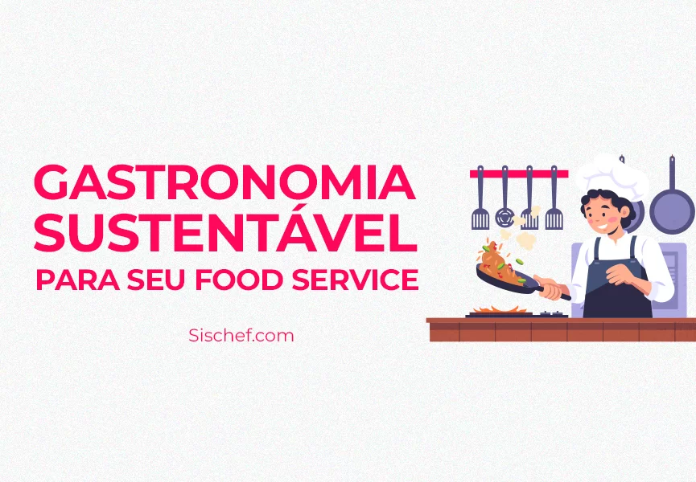
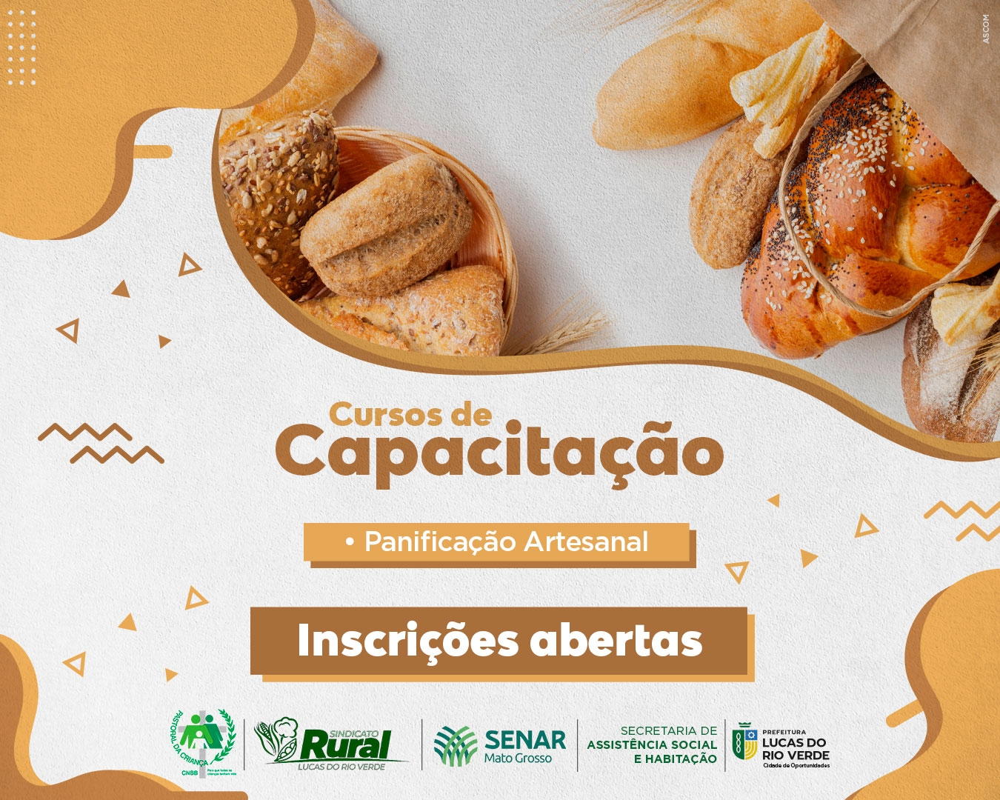
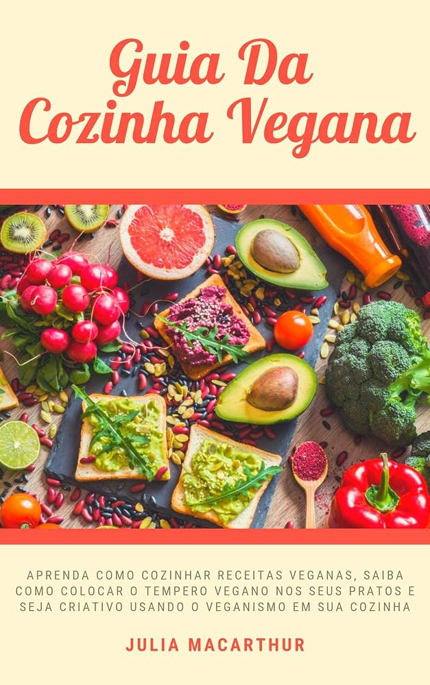

Palestra: Gastronomia Sustentável
Categoria: Palestra
Data: 10/10/2026
Horário: 19h00
Local: Auditório Central
Uma introdução aos conceitos de aproveitamento integral de alimentos e redução do desperdício na cozinha.
A Universidade Vale do Rio é uma instituição de ensino superior comprometida com a formação de profissionais qualificados na área de gastronomia. Ao longo do ano, a universidade promove diversos eventos acadêmicos, como palestras, minicursos, workshops e oficinas culinárias, abertos a alunos e à comunidade.
Confira abaixo os principais eventos disponíveis neste semestre.

Categoria: Palestra
Data: 10/10/2026
Horário: 19h00
Local: Auditório Central
Uma introdução aos conceitos de aproveitamento integral de alimentos e redução do desperdício na cozinha.

Categoria: Minicurso
Data: 12/10/2026
Horário: 14h00
Local: Cozinha Experimental 01
Curso prático voltado para alunos iniciantes na produção de pães artesanais e fermentação natural.
Categoria: Workshop
Data: 15/10/2026
Horário: 09h00
Local: Cozinha Experimental 02
Atividade prática sobre técnicas básicas de confeitaria, massas e coberturas.

Categoria: Oficina
Data: 17/10/2026
Horário: 15h30
Local: Cozinha Experimental 01
Exercícios práticos de substituição de ingredientes e preparo de pratos 100% vegetais.
Categoria: Palestra
Data: 20/10/2026
Horário: 19h30
Local: Auditório Central
Chefs e profissionais da área compartilham experiências sobre oportunidades de carreira na gastronomia.
Categoria: Minicurso
Data: 22/10/2026
Horário: 10h00
Local: Cozinha Experimental 02
Introdução às técnicas de harmonização entre pratos e vinhos.